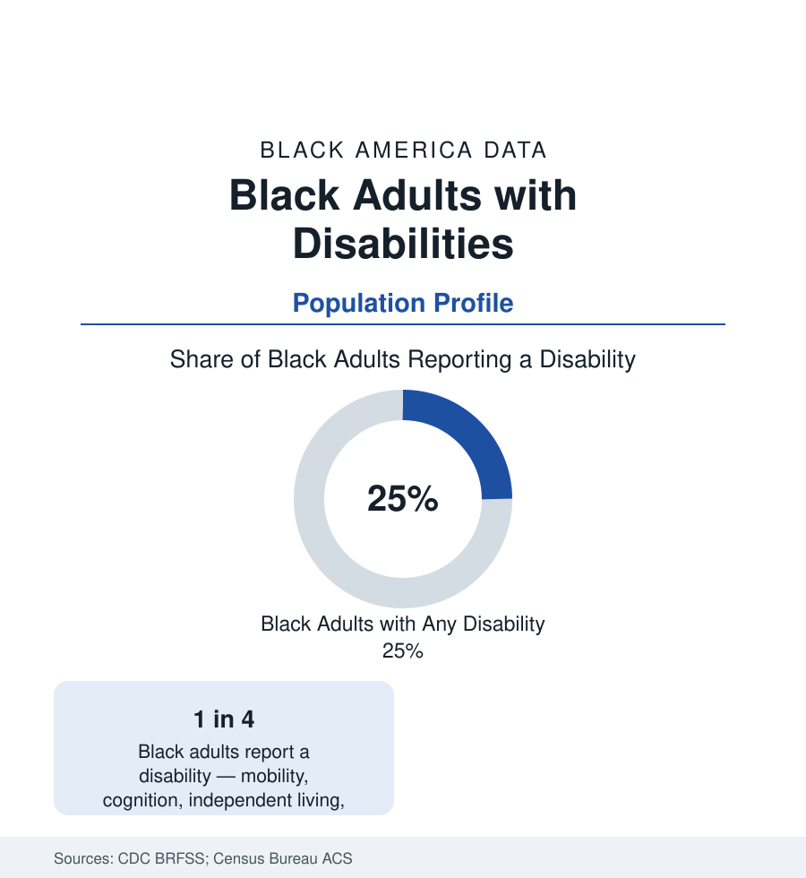

Black Census
Black Americans with Disabilities: One in Four Adults
About a quarter of Black adults report a disability in the federal health surveys — the intersection of the disability and race data.

About one in four Black adults in the United States reports a disability — mobility, cognition, independent living, hearing, vision, or self-care — in the CDC's Behavioral Risk Factor data, a share above the national adult average, and the American Community Survey counts millions of Black children and working-age adults with disabilities beneath that headline. Disability is the census file that intersects every other section of this reference: the health conditions that cause it, the employment penalty that follows it, the benefits that support it. This article reports the disability data.
Types and the Age Curve
The CDC's six-type framework distributes Black disability in the pattern the health section predicts. Mobility disability (serious difficulty walking or climbing) is the most common type, tracking the musculoskeletal and diabetes-amputation data; cognition (difficulty concentrating, remembering, deciding) runs second, with the mental-health and aging files behind it; independent-living and self-care difficulties mark the severe end; hearing and vision complete the set, the vision file carrying the diabetic-eye and glaucoma data of the health profiles. The age curve is steep and shifted: Black disability prevalence rises from the teens in young adulthood (injury, mental-health, and congenital conditions) through a working-age band (roughly a quarter to a third in the fifties) to a majority of Black seniors reporting at least one type — with onset at each age band running earlier than the national pattern, so that the working-age disability years lost are the population's distinctive burden in the labor data.
Employment and the Benefits System
The employment data for Black adults with disabilities are the reference's most difficult labor tables: employment rates for working-age adults with disabilities run at roughly a third of the non-disabled rate nationally, and Black disabled workers post among the lowest employment rates of any major subgroup in the ACS series — the intersection of two documented penalties measured jointly at last. The income data run through the disability benefits system: Social Security Disability Insurance and Supplemental Security Income support millions in the population (the SSI program's rolls are disproportionately Black in the SSA data, reflecting both the disability rates and the means test's interaction with the wealth profile), and the disability-determination process — application, denial, appeal, the administrative-law hearing backlog — is its own documented file, with allowance rates varying by state and representation. The ABLE accounts, the Ticket to Work program, and the vocational rehabilitation system form the policy layer the program data track.
Children and the Education Link
The child disability data join this profile to the education section: the IDEA child counts (the special education profile) measure school-identified disability, while the ACS and the National Health Interview Survey measure the population's — the two series overlap imperfectly, and the gap between them (children with diagnosed conditions not served under IDEA, served instead under Section 504 plans or not at all) is itself a data file. The developmental-disability surveillance (the CDC's autism and developmental monitoring networks) records the diagnostic-timing data the special education profile cited — later identification for Black children converging toward parity in recent cohorts — and the transition data (the post-school outcomes of the longitudinal studies) record the population entering the adult systems above with the weakest outcomes in the file.
Living Arrangements and Care
The household data describe the support structure: Black adults with disabilities live with family at high rates in the ACS (the multigenerational and grandparents files' overlap population), rely on family caregiving at rates the caregiving surveys put above average, and use institutional care at lower rates than the national pattern until the oldest ages — the nursing-home population's composition reflecting both preference and the Medicaid spend-down arithmetic of the seniors profile. The accessibility data complete the built environment: accessible-housing stock in the American Housing Survey runs far below the disabled population's size in every metro, the disability file's housing chapter, and the transportation data (paratransit, the non-driver population) bind the community-participation measures the CDC tracks as the outcome beyond health itself.
Reading the Disability Data
Disability is the census category that will eventually include most of the population if it lives long enough, and its Black data read as the health section's summary written in function: earlier onset, heavier working-age burden, thinner resources to absorb it. One in four Black adults is not a subpopulation statistic — it is the population, at a different age of life.
More in Black Census
The Black Population of the United States: Size, Definitions, and Distribution
The Black population of the United States totals 52.8 million — 15.4 percent of the nation. How the Census Bureau defines and counts the population, and where it lives.
Black Median Household Income in the United States
Black median household income stands at $56,490 in the Census Bureau's annual income report — how the figure is measured, how it compares, and what drives it.
The Black Poverty Rate: Levels, Children, and the Long Trend
The official Black poverty rate is 17.1 percent — against 11.1 percent nationally and 7.7 percent for non-Hispanic White Americans. How poverty is measured and what the data show.
Source: Centers for Disease Control and Prevention, Behavioral Risk Factor Surveillance System and Disability & Health Data System; U.S. Census Bureau, American Community Survey disability data.